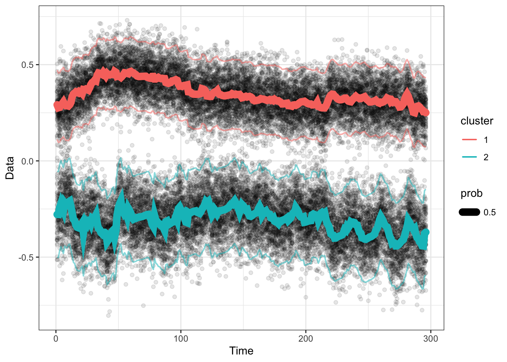
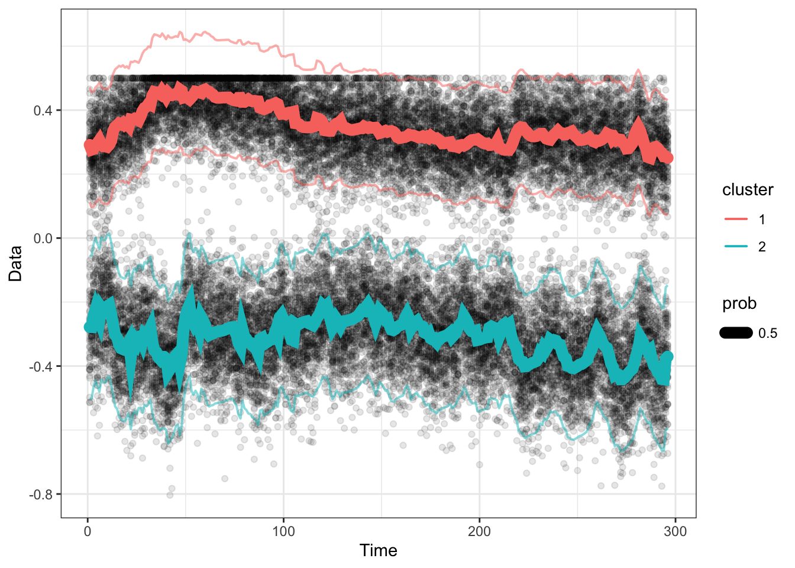

4 Generating synthetic data
Here are some simple functions to generate 1d data. This code uses data from the flowmix AOAS paper.
(More generally, the MCMC function takes mainly ylist, countslist, and X
as data.)
There are two scenarios we will test out in our paper:
One-dimensional data, two clusters. Keep censor boundaries, but move the top cluster towards top censor boundary.
One-dimensional data, two clusters. Keep means constant, but move the censor boundaries towards the center. (not done yet!)
First load existing cytogram data and flowmix model estimates.
dat_1d = readRDS("~/Downloads/paper-data/MGL1704-hourly-paper-1d-diam.RDS")
res = readRDS("~/Downloads/paper-data/1d-cvres.rds") %>% .$bestres
## Take two clusters' model parameters (Picoeukaryotes and Prochlorococcus)
orig_model = list()
orig_model$alpha = res$alpha[c(3,4),,drop=FALSE]
orig_model$beta = res$beta[c(3,4)]
orig_model$sigma = res$sigma[c(3,4),1,1,drop=FALSE]
orig_model$dimdat = res$dimdat
orig_model$numclust = res$numclust
orig_model$TT = res$TT
## Covariates are the same
orig_model$X = res$X
## Save the "original model"
saveRDS(orig_model, file=file.path("~/repos/flowcut/inst/output", "orig_model.RDS"))Next, we’ll make several versions of this model with isignal from 0 to 10; (1)
isignal=0 means the means are completely overlapping. (2) isignal=10 is the
highest signal size (gap between the two means).
The cluster probabilities are set to be all 1/2 everywhere. This means that the true \(\alpha\) coefficients are zero.
#' From an original set of model parameters (|true_model|),
#' generate synthetic 2-cluster 1-dimensional data with equal probabilities.
#'
#' @param isignal 0 to 10, which generates the means.
#'
#' @return A list with beta, mn, alpha, prob, X, sigma, TT, numclust.
#' @export
make_model <- function(orig_model, isignal){
## Setup
stopifnot(isignal %in% 0:10)
new_model = orig_model
new_model$numclust = 2
## Not used now: Renormalize the probabilities
if(FALSE){
link = cbind(1, orig_model$X) %*% t(orig_model$alpha)
new_model$prob = exp(link) / rowSums(exp(link))
new_model$prob %>% matplot(type = 'l', lty = 1)
}
## We are actually just going to use flat probabilities, for now.
alphamat = orig_model$alpha
alphamat[,-1] = 0
alphamat[,1] = 1
new_model$alpha = alphamat
new_model$prob = matrix(1/2, nrow = orig_model$TT, ncol = 2)
## Take the two intercepts
intp_high = orig_model$beta %>% .[[1]]%>% .["intp",]
intp_low = orig_model$beta %>% .[[2]]%>% .["intp",]
increment = (intp_high - intp_low)/10
## Bring the larger mean down.
new_model$beta[[1]]["intp",] = intp_low + increment * isignal
new_model$mn = array(NA, dim = c(orig_model$TT, 1, 2))
new_model$mn[,,1] = (cbind(1,new_model$X)) %*% (new_model$beta[[1]])
new_model$mn[,,2] = (cbind(1,new_model$X)) %*% (new_model$beta[[2]])
## Optional: plot the means
if(FALSE){
new_model$mn[,1,] %>% matplot(type = 'l', lty = 1)
}
return(new_model)
}par(mfrow = c(3,1))
new_model = make_model(orig_model, 0)
new_model$mn %>% .[,1,] %>% matplot(type='l', main = paste0("isignal=", 0), ylim = c(-0.5, 0.6))
new_model = make_model(orig_model, 5)
new_model$mn %>% .[,1,] %>% matplot(type='l', main = paste0("isignal=", 5), ylim = c(-0.5, 0.6))
new_model = make_model(orig_model, 10)
new_model$mn %>% .[,1,] %>% matplot(type='l', main = paste0("isignal=", 10), ylim = c(-0.5, 0.6))
Then, we will generate data from this model using the function gen_1d().
#' Generate 1d data with 2 clusters from a list (|true_model|)
#' containing true model parameters.
#'
#' @param true_model List containing beta, alpha, mn, prob, numclust.
#'
#' @return Cytograms (a |ylist| object)
#' @export
gen_1d <- function(true_model, nt = 1000){
## Setup
stopifnot(true_model$numclust == 2)
TT = dim(true_model$mn)[1]
## Generate cytograms
ylist = list()
for(tt in 1:TT){
## Generate memberships Samples |nt| memberships out of (1:numclust)
## according to the cluster probabilities in |prob|.
nt_by_clust = rmultinom(1, size = nt, true_model$prob[tt,])
## draws = sample(1:numclust, size = nt, replace = TRUE, prob = true_model$prob[tt,])
draws = c(rep(1, nt_by_clust[1]), rep(2, nt_by_clust[2]))
y_onetime = list()
for(iclust in 1:true_model$numclust){
ntk = nt_by_clust[iclust]
membership = rep(iclust, ntk)
y_onetime[[iclust]] = cbind(MASS::mvrnorm(n = ntk,
mu = true_model$mn[tt,,iclust],
Sigma = true_model$sigma[iclust,,]))
}
y = do.call(rbind, y_onetime)
## Data
ylist[[tt]] = y
}
return(ylist)
}(TODO We’ll generate data particles with probability proportional to 1/biomass.)
Testing this function out.
## Generate data
set.seed(100)
new_model = make_model(orig_model, 8)
ylist = gen_1d(new_model, nt = 100)
flowtrend::plot_1d(ylist, obj = new_model)
## Censor it
ylist = lapply(ylist, function(y){
y = pmin(y, 0.5)
})
flowtrend::plot_1d(ylist, obj = new_model)
## Form the censored "box"
Cbox = rbind(c(-Inf, 0.5)) ## Warning: The `x` argument of `as_tibble.matrix()` must have unique column names if `.name_repair` is omitted as of tibble 2.0.0.
## ℹ Using compatibility `.name_repair`.
## ℹ The deprecated feature was likely used in the flowtrend package.
## Please report the issue to the authors.
## This warning is displayed once every 8 hours.
## Call `lifecycle::last_lifecycle_warnings()` to see where this warning was generated.

(TODO: Maybe we will use fewer than 40 coefficients. Let’s get the top 10 coefficients by importance, and only use them.)